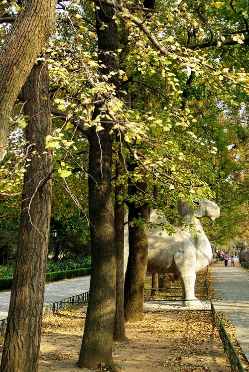

more pix here…..

你是如此美丽。
别了南京，屈指算来已有十数载... 这石刻，这树和叶子，这人这景... 又唤回那曾经辉煌过的6年半的往日时光
呵呵,真是太有意思了.世界太小了,那天看见你在东拍拍西拍拍,没想到把我们拍进去了.我就是那个两个人,两棵树的男的.其实我女朋友经常看你的BLOG,是你的狗狗首先被她认出来了,还告诉我你就是斑竹,没想到今天就看见你的照片了!太巧了!
哇:shock:~~，那么远也能看清楚我吗？世界好小啊~~ 希望你们不介意我把你们拍摄下来。其实我挺喜欢这张照片的，呵呵~~
为幸福干杯！
christina,你用的什么相机啊....不错啊... 对了,我的房子搞好了.你可以去 blueeric.blogone.net看看....灯和你的差不多啊....... 谢谢你原来帮我拍的你家的照片
呵呵,真是太有意思了.世界太小了!我就是那个两个人,两棵树的男主角的好朋友.其实我好朋友的女朋友经常看你的BLOG,是你的狗狗首先被她认出来了,还告诉我的好朋友你就是斑竹,没想到今天就看见你的照片了!太巧了!（this picture does give me a feel of harmony & serenity. great!)
很喜欢那满地落叶的感觉。虽然有一点点感伤。还有Christina和妞妞的照片，好可爱：）
照片好美,人更美！ :razz:
david is a good fan of photography.:razz:now the lever of chris' is better. j'aime bien les photo.très belles:!:
我也是南京的。 很喜欢你的主页，照片很有感觉。 可以交换链介接吗？
已经添加在http://christina.tecinese.com右边E-LIFE的连接里了.
存档只读，评论已关闭。
Name (required)
Email (will not be published) (required)
Website
« 自我控制的练习 | Happy Halloween！ »
12 Responses to “南京东郊”
2004-10-31
你是如此美丽。
2004-11-01
别了南京，屈指算来已有十数载...
这石刻，这树和叶子，这人这景...
又唤回那曾经辉煌过的6年半的往日时光
2004-11-01
呵呵,真是太有意思了.世界太小了,那天看见你在东拍拍西拍拍,没想到把我们拍进去了.我就是那个两个人,两棵树的男的.其实我女朋友经常看你的BLOG,是你的狗狗首先被她认出来了,还告诉我你就是斑竹,没想到今天就看见你的照片了!太巧了!
2004-11-01
哇:shock:~~，那么远也能看清楚我吗？世界好小啊~~
希望你们不介意我把你们拍摄下来。其实我挺喜欢这张照片的，呵呵~~
2004-11-01
为幸福干杯！
2004-11-02
christina,你用的什么相机啊....不错啊...
对了,我的房子搞好了.你可以去
blueeric.blogone.net看看....灯和你的差不多啊.......
谢谢你原来帮我拍的你家的照片
2004-11-02
呵呵,真是太有意思了.世界太小了!我就是那个两个人,两棵树的男主角的好朋友.其实我好朋友的女朋友经常看你的BLOG,是你的狗狗首先被她认出来了,还告诉我的好朋友你就是斑竹,没想到今天就看见你的照片了!太巧了!（this picture does give me a feel of harmony & serenity. great!)
2004-11-02
很喜欢那满地落叶的感觉。虽然有一点点感伤。还有Christina和妞妞的照片，好可爱：）
2004-11-03
照片好美,人更美！ :razz:
2004-11-03
david is a good fan of photography.:razz:now the lever of chris' is better. j'aime bien les photo.très belles:!:
2004-11-05
我也是南京的。
很喜欢你的主页，照片很有感觉。
可以交换链介接吗？
2004-11-05
已经添加在http://christina.tecinese.com右边E-LIFE的连接里了.
Leave A Reply
存档只读，评论已关闭。